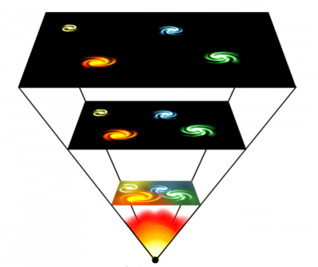
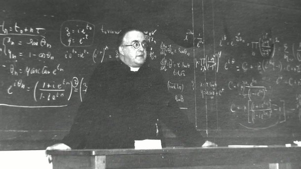
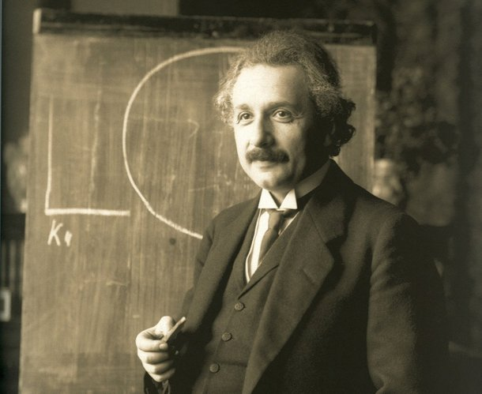

<
════════════════════════════════════ஜ۩۞۩ஜ══════════════════════════════════════════
Referencia a star wars na fonte s2
Sumario
*página 1----Como aconteceu?
*página 2----Quando aconteceu?
*página 3----Formação de vida.
*página 4----curiosidades e fatos
*página 5 a diante----Artigos e texto

Pag 1
A busca pela compreensão sobre como foi desencadeado o processo que originou o universo atual, proporcionou – e ainda proporciona – vários debates, pesquisas e teorias que possam explicar tal fenômeno. É um tema que desperta grande curiosidade dos humanos desde os tempos mais remotos e gera grandes polêmicas, envolvendo conceitos religiosos, filosóficos e científicos. Ela apoia-se, em parte, na teoria da relatividade do físico Albert Einstein (1879-1955) e nos estudos dos astrônomos Edwin Hubble (1889-1953) e Milton Humason (1891-1972), os quais demonstraram que o universo não é estático e se encontra em constante expansão, ou seja, as galáxias estão se afastando umas das outras. Até então, havia uma mistura de partículas subatômicas (qharks, elétrons, neutrinos e suas partículas) que se moviam em todos os sentidos com velocidades próximas à da luz. As primeiras partículas pesadas, prótons e nêutrons, associaram-se para formarem os núcleos de átomos leves, como hidrogênio, hélio e lítio, que estão entre os principais elementos químicos do universo. Cerca de 1 milhão de anos após o instante inicial, a matéria e a radiação luminosa se separaram e o Universo tornou-se transparente: com a união dos elétrons aos núcleos atômicos, a luz pode caminhar livremente.

Pag 2
O Big Bang é uma das teorias mais aceitas pela comunidade científica sobre a origem do nosso universo. Segundo essao nosso Universo atual teve origem em uma grande explosão por volta de 14 bilhões de anos atrás. Tudo se deu através de um ponto material muito pequeno, quente e extremamente denso essa grande explosão deu origem ao espaço-tempo.
Pag 3
Para isso utilizaremos um calendário cósmico, baseado na obra do astrônomo Carl Sagan, onde todo o tempo cósmico foi reduzido a um ano. Cada mês desse ano, nesse calendário, representa um pouco mais de um bilhão de anos e nos 12 meses desse calendário estão os 14 bilhões de anos, que é a idade do universo. A teoria do Big Bang foi baseada em parte na teoria relativista de Albert Einstein e nos estudos dos astrônomos Edwin Hubble e Milton Humason, que conseguiram demonstrar que o universo não é estático e que está em constante expansão e as galáxias estão umas se afastando das outras, portanto em algum período elas deveriam estar mais próximas do que hoje ou até mesmo em um único ponto material.
FORMAÇÃO DA VIA LÁCTEA
A nossa galáxia Via Láctea se formou a aproximadamente 13 bilhões de anos e em nossa escala, ela teria se formado no final de janeiro, no dia 31. A nossa galáxia possui cerca de 200 bilhões de estrelas e tem um formato espiral e possui uma massa de cerca de um trilhão e 750 bilhões de massas solares. O nosso sistema solar fica localizado a aproximadamente 30 000 anos luz do centro da Via Láctea, no braço menor de Órion. um sistema triplo formado por Próxima Centauro (uma Anã Vermelha, muito fraca), a Alfa Centauro (uma estrela branca de brilho mais ou menos o dobro do nosso Sol) e a Beta Centauro (uma estrela alaranjada de brilho equivalente ao do nosso Sol).
NOSSO SISTEMA SOLAR
Se formou a aproximadamente 4,6 bilhões de anos atrás, e na escala utilizada aqui, se formou no dia 1 de agosto. Acredita-se que esses corpos tenham sido formados por meio de um colapso de uma nuvem molecular gigante há 4,6 bilhões de anos atrás. Entre os muitos corpos que orbitam ao redor do Sol, a maior parte da massa está contida dentro de oito planetas, cujas órbitas são quase circulares e se encontram dentro de um disco quase plano, denominado de “plano da eclíptica”. Os quatro menores planetas (Mercúrio, Vênus, Terra e Marte) são conhecidos como planetas telúricos ou sólidos, encontram-se mais próximos do Sol e são compostos principalmente de metais e rochas. Os quatro maiores planetas (Júpiter, Saturno, Urano e Netuno) encontram-se mais distantes do Sol e concentram mais massa do que os planetas telúricos, sendo também chamados de planetas gasosos. Urano e Netuno, conhecidos também como “planetas ultra periféricos”, são cobertos de gelo, sendo às vezes referidos como “gigantes de gelo”, apresentando também em suas composições água, amônia, metano, etc. Além de milhares de corpos pequenos nestas duas regiões, vários outros pequenos objetos viajam livremente entre as regiões, como cometas e centauros, que são corpos menores do sistema solar. Para uma noção da dimensão astronômica das distâncias no espaço devem-se fazer cálculos e usar um modelo que permita uma percepção mais clara do que está em jogo. A essa escala, a Terra ficaria a 23,6 metros de distância e seria uma esfera com apenas 2 mm de diâmetro (a Lua ficaria a uns 5 cm da Terra, e teria um diâmetro de uns 0,5 mm). Quanto à estrela mais próxima, a Próxima Centauro, essa estaria a 6 332 km do Sol, enquanto a estrela Sírio a 13 150 km. Se o tempo de uma viagem da Terra à Lua, a cerca de 257 000 km/hora, fosse de uma hora e um quarto, levaria cerca de três semanas terrestres para se ir da Terra ao Sol, 3 meses se ir a Júpiter, sete meses para Saturno e cerca de dois anos e meio para chegar a Plutão e deixar o nosso sistema solar. A partir daí, a essa velocidade, levaria 17 600 anos até chegar à estrela mais próxima, e 35 000 anos até Sírio. Os primeiros organismos multicelulares teriam surgido por volta de 2,1 bilhões de anos atrás, e no nosso calendário teria surgido por volta do dia 28 do mês de Novembro. Há seres vivos multicelulares em que praticamente não há diferenciação entre células – como as esponjas – e outros com uma estrutura muito mais complexa, com o corpo diferenciado em tecidos e órgãos com funções específicas. Em Dezembro do nosso calendário cósmico é que realmente surgiram formas de vidas macroscópicas que já foram estudadas através de registros fósseis ou que vivem em nosso planeta até os dias atuais. Em 15 de Dezembro, do nosso calendário cósmico, aconteceu a Explosão Cambriana que foi o aparecimento relativamente rápido, em um período de vários milhões de anos, dos phyla mais importantes a cerca de 530 milhões de anos atrás, conforme encontrado em registros fósseis. Até cerca de 580 milhões de anos a maioria dos organismos eram simples, compostos de células individuais, ocasionalmente organizadas em colônias. Nos 70 ou 80 milhões anos seguintes a taxa de evolução foi acelerada em uma ordem de magnitude e a diversidade da vida começou a se desenvolver.
════════════════════════════════════ஜ۩۞۩ஜ══════════════════════════════════════════
Pag 4
𝟭 – 𝙎𝙚𝙜𝙪𝙣𝙙𝙤 𝙖 𝙩𝙚𝙤𝙧𝙞𝙖 𝙙𝙤 𝘽𝙞𝙜 𝘽𝙖𝙣𝙜, 𝙙𝙪𝙧𝙖𝙣𝙩𝙚 𝙤 𝙥𝙧𝙞𝙢𝙚𝙞𝙧𝙤 𝙨𝙚𝙜𝙪𝙣𝙙𝙤 𝙙𝙚 𝙨𝙚𝙪 𝙨𝙪𝙧𝙜𝙞𝙢𝙚𝙣𝙩𝙤, 𝙤 𝙐𝙣𝙞𝙫𝙚𝙧𝙨𝙤 𝙨𝙚 𝙚𝙭𝙥𝙖𝙣𝙙𝙞𝙪 𝙖 𝙪𝙢𝙖 𝙫𝙚𝙡𝙤𝙘𝙞𝙙𝙖𝙙𝙚 𝙨𝙪𝙥𝙚𝙧𝙞𝙤𝙧 𝙖̀ 𝙙𝙖 𝙡𝙪𝙯.
𝟮 – 𝘼𝙤 𝙘𝙤𝙣𝙩𝙧𝙖́𝙧𝙞𝙤 𝙙𝙤 𝙦𝙪𝙚 𝙥𝙤𝙨𝙨𝙖 𝙥𝙖𝙧𝙚𝙘𝙚𝙧, 𝙚𝙨𝙨𝙖 𝙞𝙙𝙚𝙞𝙖 𝙣𝙖̃𝙤 𝙫𝙞𝙤𝙡𝙖 𝙤 𝙥𝙧𝙞𝙣𝙘𝙞́𝙥𝙞𝙤 𝙥𝙧𝙤𝙥𝙤𝙨𝙩𝙤 𝙥𝙤𝙧 𝘼𝙡𝙗𝙚𝙧𝙩 𝙀𝙞𝙣𝙨𝙩𝙚𝙞𝙣 𝙙𝙚 𝙦𝙪𝙚 𝙣𝙖𝙙𝙖 𝙥𝙤𝙙𝙚 𝙫𝙞𝙖𝙟𝙖𝙧 𝙢𝙖𝙞𝙨 𝙙𝙚𝙥𝙧𝙚𝙨𝙨𝙖 𝙙𝙤 𝙦𝙪𝙚 𝙖 𝙡𝙪𝙯 𝙣𝙤 𝙐𝙣𝙞𝙫𝙚𝙧𝙨𝙤 — 𝙖𝙛𝙞𝙣𝙖𝙡, 𝙤 𝙘𝙤𝙣𝙘𝙚𝙞𝙩𝙤 𝙣𝙖̃𝙤 𝙨𝙚 𝙖𝙥𝙡𝙞𝙘𝙖 𝙖̀ 𝙫𝙚𝙡𝙤𝙘𝙞𝙙𝙖𝙙𝙚 𝙙𝙚 𝙚𝙭𝙥𝙖𝙣𝙨𝙖̃𝙤 𝙙𝙤 𝙘𝙤𝙨𝙢𝙤𝙨 𝙥𝙧𝙤𝙥𝙧𝙞𝙖𝙢𝙚𝙣𝙩𝙚 𝙙𝙞𝙩𝙤.
𝟯 – 𝘼 𝙞𝙙𝙚𝙞𝙖 𝙙𝙚 𝙦𝙪𝙚 𝙤 𝙐𝙣𝙞𝙫𝙚𝙧𝙨𝙤 𝙘𝙤𝙢𝙚𝙘̧𝙤𝙪 𝙖 𝙨𝙚 𝙚𝙭𝙥𝙖𝙣𝙙𝙞𝙧 𝙖 𝙥𝙖𝙧𝙩𝙞𝙧 𝙙𝙚 𝙪𝙢𝙖 𝙨𝙞𝙣𝙜𝙪𝙡𝙖𝙧𝙞𝙙𝙖𝙙𝙚 — 𝙞𝙨𝙩𝙤 𝙚́, 𝙙𝙚 𝙪𝙢 𝙥𝙤𝙣𝙩𝙤 𝙞𝙣𝙛𝙞𝙣𝙞𝙩𝙖𝙢𝙚𝙣𝙩𝙚 𝙙𝙚𝙣𝙨𝙤 𝙚 𝙘𝙤𝙣𝙘𝙚𝙣𝙩𝙧𝙖𝙙𝙤 — 𝙛𝙤𝙞 𝙥𝙧𝙤𝙥𝙤𝙨𝙩𝙖 𝙤𝙧𝙞𝙜𝙞𝙣𝙖𝙡𝙢𝙚𝙣𝙩𝙚 𝙥𝙤𝙧 𝙪𝙢 𝙖𝙨𝙩𝙧𝙤𝙛𝙞́𝙨𝙞𝙘𝙤 𝙚 𝙥𝙖𝙙𝙧𝙚 𝙘𝙖𝙩𝙤́𝙡𝙞𝙘𝙤 𝙗𝙚𝙡𝙜𝙖 𝙘𝙝𝙖𝙢𝙖𝙙𝙤 𝙂𝙚𝙤𝙧𝙜𝙚𝙨 𝙇𝙖𝙢𝙖𝙞̂𝙩𝙧𝙚, 𝙚𝙢 𝟭𝟵𝟮𝟳.𝙊𝙡𝙖́
𝟰 – 𝙀𝙢 𝙪𝙢 𝙥𝙧𝙞𝙢𝙚𝙞𝙧𝙤 𝙢𝙤𝙢𝙚𝙣𝙩𝙤, 𝙀𝙞𝙣𝙨𝙩𝙚𝙞𝙣 𝙣𝙖̃𝙤 𝙙𝙚𝙪 𝙢𝙪𝙞𝙩𝙖 𝙗𝙤𝙡𝙖 𝙥𝙖𝙧𝙖 𝙖 𝙥𝙧𝙤𝙥𝙤𝙨𝙩𝙖 𝙙𝙚 𝙇𝙖𝙢𝙖𝙞̂𝙩𝙧𝙚, 𝙟𝙖́ 𝙦𝙪𝙚 𝙤 𝙛𝙞́𝙨𝙞𝙘𝙤 𝙧𝙚𝙟𝙚𝙞𝙩𝙖𝙫𝙖 𝙖 𝙞𝙙𝙚𝙞𝙖 𝙙𝙚 𝙦𝙪𝙚 𝙤 𝙘𝙤𝙨𝙢𝙤𝙨 𝙥𝙤𝙙𝙚𝙧𝙞𝙖 𝙩𝙚𝙧 𝙨𝙚 𝙤𝙧𝙞𝙜𝙞𝙣𝙖𝙙𝙤 𝙙𝙚 𝙪𝙢 𝙚𝙨𝙩𝙖𝙙𝙤 𝙩𝙖̃𝙤 𝙞𝙣𝙘𝙧𝙞𝙫𝙚𝙡𝙢𝙚𝙣𝙩𝙚 𝙙𝙚𝙣𝙨𝙤 𝙚 𝙢𝙞𝙣𝙪́𝙨𝙘𝙪𝙡𝙤 𝙘𝙤𝙢𝙤 𝙤 𝙙𝙚𝙨𝙘𝙧𝙞𝙩𝙤 𝙥𝙚𝙡𝙤 𝙥𝙖𝙙𝙧𝙚.𝟱 – 𝙀𝙢𝙗𝙤𝙧𝙖 𝙤 𝙣𝙤𝙢𝙚 “𝘽𝙞𝙜 𝘽𝙖𝙣𝙜” 𝙨𝙪𝙜𝙞𝙧𝙖 𝙦𝙪𝙚 𝙤 𝙐𝙣𝙞𝙫𝙚𝙧𝙨𝙤 𝙨𝙪𝙧𝙜𝙞𝙪 𝙙𝙚 𝙪𝙢𝙖 𝙙𝙚𝙨𝙘𝙤𝙢𝙪𝙣𝙖𝙡 𝙚𝙭𝙥𝙡𝙤𝙨𝙖̃𝙤, 𝙖 𝙫𝙚𝙧𝙙𝙖𝙙𝙚 𝙚́ 𝙦𝙪𝙚 𝙖 𝙢𝙖𝙞𝙤𝙧𝙞𝙖 𝙙𝙤𝙨 𝙘𝙞𝙚𝙣𝙩𝙞𝙨𝙩𝙖𝙨 𝙘𝙤𝙣𝙘𝙤𝙧𝙙𝙖 𝙦𝙪𝙚 𝙤 𝙚𝙫𝙚𝙣𝙩𝙤 𝙘𝙤𝙣𝙨𝙞𝙨𝙩𝙞𝙪 𝙚𝙢 𝙪𝙢𝙖 𝙞𝙢𝙚𝙣𝙨𝙖 𝙚𝙭𝙥𝙖𝙣𝙨𝙖̃𝙤.
𝟲 – 𝙑𝙤𝙡𝙩𝙖𝙣𝙙𝙤 𝙖𝙤 𝙚𝙨𝙩𝙖𝙙𝙤 𝙞𝙣𝙛𝙞𝙣𝙞𝙩𝙖𝙢𝙚𝙣𝙩𝙚 𝙙𝙚𝙣𝙨𝙤 𝙚 𝙘𝙤𝙣𝙘𝙚𝙣𝙩𝙧𝙖𝙙𝙤 𝙦𝙪𝙚 𝙩𝙚𝙧𝙞𝙖 𝙙𝙖𝙙𝙤 𝙤𝙧𝙞𝙜𝙚𝙢 𝙖𝙤 𝙐𝙣𝙞𝙫𝙚𝙧𝙨𝙤, 𝙚𝙡𝙚 𝙚́ 𝙘𝙤𝙣𝙝𝙚𝙘𝙞𝙙𝙤 𝙥𝙚𝙡𝙤𝙨 𝙣𝙤𝙢𝙚𝙨 𝙙𝙚 “𝙖́𝙩𝙤𝙢𝙤 𝙥𝙧𝙞𝙢𝙤𝙧𝙙𝙞𝙖𝙡” 𝙤𝙪, 𝙖𝙞𝙣𝙙𝙖, 𝙙𝙚 “𝙨𝙞𝙣𝙜𝙪𝙡𝙖𝙧𝙞𝙙𝙖𝙙𝙚” 𝙚, 𝙙𝙚 𝙖𝙘𝙤𝙧𝙙𝙤 𝙘𝙤𝙢 𝙖 𝙩𝙚𝙤𝙧𝙞𝙖 𝙙𝙤 𝘽𝙞𝙜 𝘽𝙖𝙣𝙜, 𝙘𝙤𝙣𝙨𝙞𝙨𝙩𝙞𝙖 𝙚𝙢 𝙪𝙢 𝙪́𝙣𝙞𝙘𝙤 𝙥𝙤𝙣𝙩𝙤 𝙨𝙪𝙥𝙚𝙧𝙦𝙪𝙚𝙣𝙩𝙚 𝙚 𝙘𝙤𝙣𝙙𝙚𝙣𝙨𝙖𝙙𝙤 𝙘𝙤𝙢 𝙖𝙥𝙚𝙣𝙖𝙨 𝙖𝙡𝙜𝙪𝙣𝙨 𝙢𝙞𝙡𝙞́𝙢𝙚𝙩𝙧𝙤𝙨 𝙙𝙚 𝙩𝙖𝙢𝙖𝙣𝙝𝙤 𝙚 𝙦𝙪𝙚 𝙘𝙤𝙣𝙩𝙞𝙣𝙝𝙖 𝙩𝙤𝙙𝙖 𝙖 𝙢𝙖𝙩𝙚́𝙧𝙞𝙖 𝙦𝙪𝙚 𝙘𝙤𝙢𝙥𝙤̃𝙚 𝙤 𝙘𝙤𝙨𝙢𝙤𝙨.
𝟳 – 𝙈𝙪𝙞𝙩𝙤𝙨 𝙘𝙞𝙚𝙣𝙩𝙞𝙨𝙩𝙖𝙨 𝙖𝙘𝙧𝙚𝙙𝙞𝙩𝙖𝙢 𝙦𝙪𝙚, 𝙖𝙣𝙩𝙚𝙨 𝙙𝙤 𝙨𝙪𝙧𝙜𝙞𝙢𝙚𝙣𝙩𝙤 𝙙𝙚𝙨𝙨𝙖 𝙨𝙞𝙣𝙜𝙪𝙡𝙖𝙧𝙞𝙙𝙖𝙙𝙚, 𝙣𝙖̃𝙤 𝙚𝙭𝙞𝙨𝙩𝙞𝙖 𝙣𝙖𝙙𝙖 — 𝙤𝙪 𝙨𝙚𝙟𝙖, 𝙣𝙚𝙢 𝙚𝙨𝙥𝙖𝙘̧𝙤, 𝙩𝙚𝙢𝙥𝙤 𝙤𝙪 𝙚𝙣𝙚𝙧𝙜𝙞𝙖.
𝟴 – 𝘼 “𝙧𝙖𝙙𝙞𝙖𝙘̧𝙖̃𝙤 𝙘𝙤́𝙨𝙢𝙞𝙘𝙖 𝙙𝙚 𝙛𝙪𝙣𝙙𝙤 𝙚𝙢 𝙢𝙞𝙘𝙧𝙤-𝙤𝙣𝙙𝙖𝙨”, 𝙪𝙢 𝙩𝙞𝙥𝙤 𝙙𝙚 𝙧𝙖𝙙𝙞𝙖𝙘̧𝙖̃𝙤 𝙧𝙚𝙨𝙞𝙙𝙪𝙖𝙡 𝙦𝙪𝙚 𝙥𝙤𝙙𝙚 𝙨𝙚𝙧 𝙙𝙚𝙩𝙚𝙘𝙩𝙖𝙙𝙖 𝙚𝙢 𝙩𝙤𝙙𝙤 𝙤 𝙐𝙣𝙞𝙫𝙚𝙧𝙨𝙤 𝙚 𝙚𝙢 𝙩𝙤𝙙𝙖𝙨 𝙖𝙨 𝙙𝙞𝙧𝙚𝙘̧𝙤̃𝙚𝙨, 𝙚́ 𝙘𝙤𝙣𝙨𝙞𝙙𝙚𝙧𝙖𝙙𝙖 𝙖 𝙢𝙚𝙡𝙝𝙤𝙧 𝙚𝙫𝙞𝙙𝙚̂𝙣𝙘𝙞𝙖 𝙙𝙚 𝙦𝙪𝙚 𝙤 𝘽𝙞𝙜 𝘽𝙖𝙣𝙜 𝙤𝙘𝙤𝙧𝙧𝙚𝙪.
𝟵 – 𝙀 𝙥𝙤𝙧 𝙛𝙖𝙡𝙖𝙧 𝙣𝙖 𝙧𝙖𝙙𝙞𝙖𝙘̧𝙖̃𝙤 𝙘𝙤́𝙨𝙢𝙞𝙘𝙖 𝙙𝙚 𝙛𝙪𝙣𝙙𝙤 𝙚𝙢 𝙢𝙞𝙘𝙧𝙤-𝙤𝙣𝙙𝙖𝙨, 𝙨𝙪𝙖 𝙚𝙭𝙞𝙨𝙩𝙚̂𝙣𝙘𝙞𝙖 𝙛𝙤𝙞 𝙘𝙤𝙣𝙛𝙞𝙧𝙢𝙖𝙙𝙖 𝙥𝙚𝙡𝙤𝙨 𝙘𝙞𝙚𝙣𝙩𝙞𝙨𝙩𝙖𝙨 𝘼𝙧𝙣𝙤 𝙋𝙚𝙣𝙯𝙞𝙖𝙨 𝙚 𝙍𝙤𝙗𝙚𝙧𝙩 𝙒𝙤𝙤𝙙𝙧𝙤𝙬 𝙒𝙞𝙡𝙨𝙤𝙣 𝙚𝙢 𝙢𝙚𝙖𝙙𝙤𝙨 𝙙𝙤𝙨 𝙖𝙣𝙤𝙨 𝟲𝟬 — 𝙚, 𝙖𝙣𝙩𝙚𝙨 𝙙𝙚 𝙙𝙚𝙨𝙘𝙤𝙗𝙧𝙞𝙧 𝙙𝙤 𝙦𝙪𝙚 𝙨𝙚 𝙩𝙧𝙖𝙩𝙖𝙫𝙖, 𝙖 𝙙𝙪𝙥𝙡𝙖 𝙘𝙝𝙚𝙜𝙤𝙪 𝙖 𝙥𝙚𝙣𝙨𝙖𝙧 𝙦𝙪𝙚 𝙤 𝙨𝙞𝙣𝙖𝙡 𝙘𝙤𝙣𝙨𝙞𝙨𝙩𝙞𝙖 𝙚𝙢 𝙪𝙢 𝙥𝙧𝙤𝙗𝙡𝙚𝙢𝙖 𝙣𝙖 𝙖𝙣𝙩𝙚𝙣𝙖 𝙙𝙚 𝙨𝙚𝙪 𝙚𝙦𝙪𝙞𝙥𝙖𝙢𝙚𝙣𝙩𝙤 𝙥𝙧𝙤𝙫𝙤𝙘𝙖𝙙𝙤 𝙥𝙚𝙡𝙤 coco 𝙙𝙚 𝙥𝙤𝙢𝙗𝙤𝙨.
𝟭𝟬 – 𝘼𝙡𝙚́𝙢 𝙙𝙖 𝙧𝙖𝙙𝙞𝙖𝙘̧𝙖̃𝙤 𝙘𝙤́𝙨𝙢𝙞𝙘𝙖 𝙙𝙚 𝙛𝙪𝙣𝙙𝙤 𝙚𝙢 𝙢𝙞𝙘𝙧𝙤-𝙤𝙣𝙙𝙖𝙨, 𝙖 𝙚𝙭𝙥𝙖𝙣𝙨𝙖̃𝙤 𝙙𝙤 𝙐𝙣𝙞𝙫𝙚𝙧𝙨𝙤 — 𝙨𝙚𝙜𝙪𝙣𝙙𝙤 𝙖 𝙇𝙚𝙞 𝙙𝙚 𝙃𝙪𝙗𝙗𝙡𝙚-𝙃𝙪𝙢𝙖𝙨𝙤𝙣 —, 𝙖 𝙧𝙚𝙡𝙖𝙩𝙞𝙫𝙖 𝙖𝙗𝙪𝙣𝙙𝙖̂𝙣𝙘𝙞𝙖 𝙙𝙚 𝙢𝙖𝙩𝙚́𝙧𝙞𝙖 𝙚 𝙖 𝙛𝙤𝙧𝙢𝙖 𝙘𝙤𝙢𝙤 𝙖𝙨 𝙚𝙨𝙩𝙧𝙪𝙩𝙪𝙧𝙖𝙨 𝙘𝙤́𝙨𝙢𝙞𝙘𝙖𝙨 𝙙𝙚 𝙜𝙧𝙖𝙣𝙙𝙚 𝙚𝙨𝙘𝙖𝙡𝙖 𝙨𝙚 𝙙𝙞𝙨𝙩𝙧𝙞𝙗𝙪𝙚𝙢 𝙣𝙤 𝙚𝙨𝙥𝙖𝙘̧𝙤 𝙨𝙚𝙧𝙫𝙚𝙢 𝙙𝙚 “𝙥𝙞𝙡𝙖𝙧𝙚𝙨” 𝙥𝙖𝙧𝙖 𝙨𝙪𝙨𝙩𝙚𝙣𝙩𝙖𝙧 𝙖 𝙩𝙚𝙤𝙧𝙞𝙖 𝙙𝙤 𝘽𝙞𝙜 𝘽𝙖𝙣𝙜.
𝟭𝟭 – 𝘼𝙡𝙜𝙪𝙣𝙨 𝙘𝙞𝙚𝙣𝙩𝙞𝙨𝙩𝙖𝙨 𝙖𝙘𝙧𝙚𝙙𝙞𝙩𝙖𝙢 𝙦𝙪𝙚, 𝙡𝙤𝙜𝙤 𝙖𝙥𝙤́𝙨 𝙤 𝘽𝙞𝙜 𝘽𝙖𝙣𝙜, 𝙩𝙤𝙙𝙤 𝙤 𝙘𝙤𝙨𝙢𝙤𝙨 𝙥𝙤𝙙𝙚𝙧𝙞𝙖 𝙨𝙚𝙧 𝙝𝙖𝙗𝙞𝙩𝙖́𝙫𝙚𝙡 — 𝙚 𝙞𝙣𝙘𝙡𝙪𝙨𝙞𝙫𝙚 𝙦𝙪𝙚 𝙖𝙡𝙜𝙪𝙣𝙨 𝙥𝙡𝙖𝙣𝙚𝙩𝙖𝙨 𝙥𝙤𝙙𝙚𝙧𝙞𝙖𝙢 𝙩𝙚𝙧 𝙖𝙗𝙧𝙞𝙜𝙖𝙙𝙤 𝙛𝙤𝙧𝙢𝙖𝙨 𝙙𝙚 𝙫𝙞𝙙𝙖 𝙢𝙞𝙘𝙧𝙤𝙗𝙞𝙖𝙣𝙖 𝙘𝙚𝙧𝙘𝙖 𝙙𝙚 𝟭𝟱 𝙢𝙞𝙡𝙝𝙤̃𝙚𝙨 𝙙𝙚 𝙖𝙣𝙤𝙨 𝙙𝙚𝙥𝙤𝙞𝙨 𝙙𝙖 𝙜𝙧𝙖𝙣𝙙𝙚 𝙚𝙭𝙥𝙖𝙣𝙨𝙖̃𝙤 𝙞𝙣𝙞𝙘𝙞𝙖𝙡.
𝟭𝟮 – 𝙌𝙪𝙚𝙢 𝙖𝙘𝙖𝙗𝙤𝙪 𝙗𝙖𝙩𝙞𝙯𝙖𝙣𝙙𝙤 𝙖 𝙩𝙚𝙤𝙧𝙞𝙖 𝙙𝙚 “𝘽𝙞𝙜 𝘽𝙖𝙣𝙜” 𝙛𝙤𝙞 𝙤 𝙖𝙨𝙩𝙧𝙤̂𝙣𝙤𝙢𝙤 𝙗𝙧𝙞𝙩𝙖̂𝙣𝙞𝙘𝙤 𝙁𝙧𝙚𝙙 𝙃𝙤𝙮𝙡𝙚, 𝙦𝙪𝙚 𝙪𝙨𝙤𝙪 𝙤 𝙩𝙚𝙧𝙢𝙤 𝙙𝙪𝙧𝙖𝙣𝙩𝙚 𝙪𝙢𝙖 𝙚𝙣𝙩𝙧𝙚𝙫𝙞𝙨𝙩𝙖 𝙙𝙖𝙙𝙖 𝙖̀ 𝘽𝘽𝘾 𝙚𝙢 𝟭𝟵𝟰𝟵. 𝙄𝙧𝙤𝙣𝙞𝙘𝙖𝙢𝙚𝙣𝙩𝙚, 𝙚𝙡𝙚 𝙚𝙧𝙖 𝙪𝙢 𝙙𝙤𝙨 𝙢𝙖𝙞𝙤𝙧𝙚𝙨 𝙘𝙧𝙞́𝙩𝙞𝙘𝙤𝙨 𝙙𝙖 𝙩𝙚𝙤𝙧𝙞𝙖.
════════════════════════════════════ஜ۩۞۩ஜ══════════════════════════════════════════
O tamanho do sistema solar é da ordem de 5 horas luz, aproximadamente o raio médio da órbita de Plutão. nossa galáxia, a Via Láctea, tem um diâmetro de cerca de 100000 anos luz, uma dimensão que começa a parecer gigantesca, mas que é insignificante quando comparada com a dimensão estimada do Universo observável: cerca de 13,7 mil milhões de anos luz! Nesse mês, Albert Einstein chegou à forma final da sua Teoria da Relatividade Geral, uma teoria da gravitação compatível com os princípios da Relatividade Restrita, introduzida em 1905, o que não acontecia com a velha Teoria da Gravitação Newtoniana. A teoria de Einstein previa alguns efeitos GAZETA DE FÍSICA 23 ARTIGO Uma breve história do Universo: Do Big Bang ao Universo acelerado diferentes dos previstos pela teoria newtoniana, que viriam a Essa dinâmica é descrita pelas equações matemáticas da Relatividade Geral que, ainda que sem explicação, vale a pena contemplar: (1) Na expressão anterior Rµv é o tensor de Ricci, gµv o tensor métrico, R é o escalar de Ricci, Tµv designa o tensor energia-momento, G é a constante de gravitação universal e e a Cosmologia debruça-se sobre a estrutura do Universo em larga escala – o Universo é semelhante em todos os locais e em todos os locais todas as direcções são equivalentes. Essencialmente, isto diz-nos que o Universo tem uma enorme simetria, e deixa (quase) como único grau de liberdade para a dinâmica do Universo um factor de escala, que se representa como a(t), e que nos informa do modo como o tamanho do Universo varia com o tempo cósmico.
isto é, escolher se são electrões, quarks, fotões ou outras formas mais exóticas de matéria- -energia os constituintes do Universo a incluir no modelo e em que quantidades. Primeiro pilar: a expansão cósmica Em 1924, o astrónomo norte-americano Edwin Hubble fez um estudo sistemático do desvio para o vermelho da radiação recebida de outras galáxias e da distância às mesmas. Com base neste estudo publicou, em 1929, um diagrama – o diagrama de Hubble (Fig.1) – em que obtinha uma relação linear entre estas duas quantidades: quanto maior é a distância a uma determinada galáxia, maior é o desvio para o vermelho (redshift) da radiação proveniente dessa galáxia. Interpretando o desvio para o vermelho como efeito Doppler, isto é, devido ao movimento relativo entre o emissor e o receptor de radiação, concluiu-se das observações de Hubble que, genericamente, todas as galáxias se estão a afastar de nós! O holandês Willem de Sitter em 1917, o russo Alexander Friedmann, em 1922 e 1924, e o belga George Lemaître, em 1927, já haviam, antes da descoberta de Hubble, estudado modelos de universos em expansão usando a teoria de Einstein. Na descrição desta teoria, o movimento de recessão das galáxias não resulta de nenhuma velocidade peculiar das mesmas; Se no passado nada tiver invertido o processo, o espaço terá contraído tanto, que o factor de escala se terá reduzido a zero. Gamow e colaboradores concluiram que deverá ter existido uma era primordial em que a densidade de energia da radiação terá sido superior à da matéria. Apesar de a densidade de energia da radiação diminuir mais bruscamente com a expansão do que a densidade de energia da matéria – pelo que eventualmente na evolução cósmica a densidade de energia da matéria começou a dominar – deverá existir ainda hoje um vestígio dessa radiação primordial, a inundar todo o Universo em equilíbrio térmico. Num desenvolvimento paralelo, rádioastrónomos tinham encontrado, em estudos sobre emissões de baixa energia por moléculas no espaço interestelar, um ruído persistente e Em 1965, Arno Penzias e Robert Wilson, dos Laboratórios Bell, sistematicamente eliminaram todas as possíveis fontes de ruído do seu receptor rádio em Holmdell, New Jersey, tendo chegado a um nível de ruído irremovível, aparentemente com origem extraterrestre, com a Com esta idade, a temperatura do Universo desceu o suficiente para que a maior parte dos electrões e protões – que até aí se encontravam livres formando um plasma – se tivessem associado em hidrogénio neutro.
Uma mudança de paradigma: a aceleração presente do Universo Dois anos depois de ter formulado a Teoria da Relatividade Geral, Einstein dedicou-se à Cosmologia, tendo chegado à insatisfatória conclusão (do seu ponto de vista) de que as equações (1) não admitiam um universo estático como solução. Einstein tinha o preconceito filosófico de que o Universo era estático, e decidiu alterar as suas equações, da única maneira que, em quatro dimensões espacio-temporais, era possível fazê-lo consistentemente. Para manter um universo em equilíbrio com um determinado factor de escala, é necessário equilibrar a atracção que as partes do universo exercem umas sobre as outras, por nelas existir matéria-energia. 2 - Mapa das anisotropias da radiação cósmica de fundo feita pelo satélite COBE e refinada pelo WMAP. Embora impossível à luz da gravitação newtoniana, “gravidade repulsiva” é possível na teoria da gravitação relativista. A constante cosmológica de Einstein é um exemplo de matéria-energia que origina gravidade repulsiva e o mais forte candidato ao papel de “acelerador” do Universo. Imaginemo-nos num carrossel em andamento, com uma velocidade angular elevada, de modo a que, para não sermos “cuspidos” pela força centrífuga, temos de nos agarrar fortemente (criar uma força centrípeta) a um varão. Estudos de curvas de rotação galácticas demonstraram que a matéria visível presente na galáxia não consegue justificar a força gravítica (centrípeta) necessária para explicar a não ejecção das estrelas na periferia da galáxia, cujas velocidades de rotação podem ser calculadas. Há vários candidatos, desde neutrinos massivos a buracos negros ou ainda partículas exóticas, nenhum dos quais reune consenso da comunidade científica. folclore na comunidade é que a sua origem estará na energia de ponto zero de campos quânticos, que é uma consequência directa do princípio da incerteza de Heisenberg. O que sabemos, à luz dos dados do satélite WMAP, é que cerca de 73% do conteúdo matéria-energia do Universo é energia escura, 23% matéria escura e apenas 4% matéria visível ou bariónica. Numa primeira classe, à medida que caminhamos para o passado, o factor de escala nunca chega a zero, isto é, o Universo nunca colapsa num ponto. A razão é que algum tipo de matéria-energia que origina gravidade repulsiva começa a dominar a evolução do Universo, exactamente como na época presente. existiram algumas tentativas, na década de 1980, inspiradas em física das partículas e lideradas por Stephen Hawking que argumentavam a possibilidade de “nucleação” do nosso Universo. UMA BREVE HISTÓRIA DO UNIVERSO: DO BIG BANG AO UNIVERSO ACELERADO referências [1] Para saber mais sobre o Modelo Padrão da Cosmologia, recomenda-se o livro Cosmology: the science of the Universe, Edward Harrison, Cambridge University Press, segunda edição, 2000, que faz a ponte entre um livro de divulgação científica e um livro técnico. GAZETA DE FÍSICA 27 ARTIGO Depois de exibida em Lisboa, na Fundação Calouste Gulbenkian, entre Outubro de 2005 e Janeiro deste ano, a exposição “à luz de Einstein 1905-2005” está agora patente ao público em Coimbra, nas instalações do Museu Nacional da Ciência e da Técnica Doutor Mário Silva, no Colégio das Artes (antigo hospital da Universidade), até ao dia 24 de Novembro de 2006.
Esta exposição foi organizada no âmbito do Ano Internacional da Física que, em 2005, assinalou o centenário de 1905, ano em que Einstein publicou quatro trabalhos que vieram a revolucionar a física, sendo, por isso, um marco histórico da física moderna. exposição inicia-se com um percurso histórico, que ilustra a evolução do conhecimento da Natureza ao longo de 2400 anos, desde a Grécia Antiga, berço da filosofia natural, até aos finais do século XIX, quando a nova ciência física triunfou plenamente. Segue-se uma referência à vida e obra de Einstein, em particular aos seus trabalhos de 1905, após o que a exposição se desenvolve em torno de temas da luz e da matéria, mostrando importantes progressos científicos dos últimos cem anos. desde a descoberta do fotão até à óptica dos lasers, mostrando como estas realizações permeiam as tecnologias da vida contemporânea. Explicar os conceitos e realizações da física que estão por detrás da exposição, descrevendo cada um dos módulos, é o objetivo do catálogo, com o mesmo título da exposição, que está à venda para acompanhar o Na Biblioteca do Saber, Ana Simões conduz o leitor/visitante por um percurso através de 2400 anos de interrogações sobre o mundo físico, dos gregos até ao tempo de Einstein. Apresentam-se seis espaços, associados a seis filósofos da natureza/cientistas, e um conjunto de objectos emblemáticos da forma de fazer ciência associada a esses lugares. Os espaços selecionados conduzem-nos do liceu aristotélico à universidade medieval, a uma corte renascentista, a uma sociedade científica, a um gabinete de física e, finalmente, a uma universidade do século XIX. Depois deste percurso histórico, entra-se na descoberta do “novo mundo”, que começa com a Ruptura de 1905, espaço/artigo dedicado à vida e obra de Albert Einstein, em particular aos seus trabalhos revolucionários de 1905. Com ele, e com a mecânica quântica, se iniciou a revolução electrónica, fortemente impulsionada a meio do século XX com a invenção do transístor e do circuito integrado. Essa minúscula partícula carregada, “operário incansável” dos nossos dispositivos electrónicos, é também a onda que permite a observação nos microscópios electrónicos. Na Câmara da Luz, Luís Oliveira e Silva e João Mendanha explicam as propriedades da luz, desde a geração de luz laser, passando pela detecção e transmissão de luz visível ou invisível, até ao armazenamento e codificação da informação que a luz pode transportar. O leitor é convidado a partir à descoberta da física numa viagem pelo quotidiano e a investigar as suas aplicações na cultura e Com luzes visíveis ou invisíveis e aparelhos de medida que a física moderna permitiu desenvolver, conseguimos hoje observar a anatomia e a actividade de orgãos, tecidos e artérias no interior do corpo humano, perceber as suas funções, diagnosticar doenças, por vezes tratar e curar. Isto nos explica Teresa Peña no seu artigo Luz sobre a Vida, dando-nos pistas do modo como, a partir de medições de sinais eléctricos, estamos a aprender como é que os sentidos captam informação e o cérebro a processa. Hoje podemos desvendar a verdadeira estrutura e composição do Universo, medir a abundância primordial dos elementos, a radiação cósmica de fundo e a velocidade e aceleração das galáxias.
════════════════════════════════════ஜ۩۞۩ஜ══════════════════════════════════════════
“Aprender uma lição sem dor, não tem significado, isso por que as pessoas não conquistam nada, sem sacrificar alguma coisa, mas , quando elas superam as dificuldades e conseguem o que quer ,as pessoas conquistam um coração forte que não perde pra nada, um coração forte como aço”
Edward Elric
Cosmologia e o Big Bang
A cosmologia moderna se constituiu, ao longo do século XX até os dias atuais, como um campo bastante produtivo de pesquisa, resultando em grandes descobertas que atestam sua força explicativa. A Teoria do Big Bang, nome genérico e popular do modelo padrão da cosmologia, é provavelmente o programa de pesquisa mais ousado da física e da astronomia, ao tentar recriar a evolução de nosso universo observável. Nesse trabalho discutimos os principais elementos dessa teoria com um olhar epistemológico, resultando em um texto bastante útil para ser trabalhado em atividades didáticas com objetivos correlatos.
Para compreender isto é interessante perceber que mesmo o termo teoria, no singular, talvez não seja adequado sob um olhar mais atento da dinâmica da ciência. De fato, vemos que historicamente grande parte de nossas mais bem-sucedidas teorias não teria sobrevivido se as tivéssemos abandonado assim que surgiu uma anomalia, uma inadequação entre o previsto e o constatado. As ideias de Galileu referentes ao sistema solar, por exemplo, foram refutadas com sucesso (para os refutadores da época) diante da impropriedade cometida ao se retirar a Terra do centro do sistema, uma vez que as observações diretas davam respaldo ao geocentrismo7 (ver, por exemplo, REDONDI, 1989). Não fosse Galileu (e Kepler, e Newton...) sustentar a ideia de uma Terra em movimento mesmo diante das evidências tão prontamente explicitadas pelo sistema geocêntrico, e teríamos certamente esperado mais algum tempo até o surgimento de um sistema heliocêntrico bem fundamentado. Este conhecimento tomado como certo a priori, o que Lakatos chama de núcleo firme de um programa de pesquisa (1979), que não é questionado por decisão metodológica, é o que permite ao cientista uma relativa liberdade de pesquisa, sem que precise a todo instante rever as bases do conhecimento que está sendo construído. Aqui temos a característica da ciência mais prontamente associável ao dogma, uma vez que seu modus operandi se reveste de uma natureza inquestionável, mas não deveríamos levar esta característica dogmática longe demais. Mesmo Thomas Kuhn, um dos responsáveis em caracterizar a ciência como um sistema de adesões mais ou menos subjetivas pelo cientista, coloca que: Embora a investigação susceptível de ter êxito requeira uma adesão profunda ao status quo, a inovação continua a ocupar uma posição central. Peduzzi 64 solucionadores de puzzles8 dentro de regras estabelecidas, mas são também ensinados a considerar-se eles próprios como exploradores e inventores que não conhecem outras regras além das ditadas pela natureza (KUHN, 1979, p. papel do núcleo firme é fundamental no desenvolvimento de um programa de pesquisa, pois permite a investigação dos elementos periféricos e gerais do programa, permitindo um máximo de aproveitamento de suas potencialidades antes de promover um ataque mais sério aos seus fundamentos. Esse “núcleo” é “irrefutável” por decisão metodológica de seus protagonistas: as anomalias só devem conduzir a mudanças no “cinturão protetor” da hipótese auxiliar, “observacional” e das “condições iniciais” (LAKATOS, 1979, p. Esta forma de proceder permitiu progressos significativos em nossas teorias, como no caso da mecânica newtoniana aplicada ao sistema solar. Pois uma boa maneira de acabar com uma das maiores teorias já produzidas pelo intelecto humano seria justamente acreditar que estivesse terminantemente errada por não concordar com os “fatos”: [...] quando foi observado pelos newtonianos que a órbita prevista para Urano era discordante com as observações astronômicas, eles não consideraram que a Mecânica Newtoniana estivesse refutada; Le Verrier, por volta de 1845, atribuíram tal discordância à existência de um planeta ainda não conhecido – o planeta Netuno – e, portanto, não levado em consideração na órbita de Urano. Essa hipótese permitiu também calcular a trajetória de Netuno, orientando os astrônomos para a realização de novas observações que, finalmente, confirmaram a existência do novo planeta (SILVEIRA, 1996, p. A procura dos motivos das anomalias é um processo importante no amadurecimento das teorias, processo este que permite que muitos resultados novos sejam engendrados. Esta precisa ser estudada sob o foco norteador do programa de pesquisa vigente, reforçando-o ou contribuindo para o surgimento de outra teoria mais bem estruturada e de maior conteúdo de verdade, preferencialmente ao mesmo tempo em que outras teorias seguem o mesmo caminho de forma concomitante. processo de “proteção” à teoria em um programa de pesquisa é o que Lakatos (1979) denominou de “cinturão protetor”, um conjunto de hipóteses e teorias auxiliares que permitem que a teoria sobreviva enquanto for possível, através da “heurística negativa”, que proíbe o ataque direto ao núcleo firme. a heurística positiva consiste num conjunto parcialmente articulado de sugestões ou palpites sobre como mudar e desenvolver as “variantes refutáveis” do programa de pesquisa, e sobre como modificar e sofisticar o cinto de proteção “refutável” (LAKATOS, 1979, p. A explicação para a órbita discordante de Urano por meio da sugestão da existência de outro planeta, Netuno, é um exemplo ilustrativo do alcance e da eficácia do cinturão protetor de um programa de pesquisa que, neste caso, acentuou o caráter progressivo do programa newtoniano. Por exemplo, ainda sobre a mecânica newtoniana, no final do século dezenove foram constatadas anomalias sutis na órbita do planeta Mercúrio, mas suficientes para colocar a teoria newtoniana novamente em cheque. A referida anomalia, uma pequena diferença entre o periélio previsto para Mercúrio e o periélio realmente observado, só foi resolvida por uma teoria de maior sucesso explicativo, no caso a Teoria Geral da Relatividade. progressão ou regressão do programa poderá caracterizar ainda a escolha entre teorias concorrentes e, embora alguns cientistas possam continuar defendendo sua teoria mesmo diante de questões mais bem formuladas e respondidas por outra teoria, a ciência continuará em seu curso inexoravelmente evolutivo. Assim, em uma situação de concorrência deve ficar evidente o caráter progressivo do ‘novo’ programa (através de sua capacidade explicativa e poder preditivo) e a fase regressiva ou degenerativa de seu rival (onde se acentuam as inconsistências e abundam as explicações ad-hoc) (PEDUZZI, 2005, p. Foi o que aconteceu com o caso de Mercúrio, onde explicações ad-hoc9 fizeram a teoria newtoniana “degenerar”, uma vez que não suportava os novos dados observados, enquanto a teoria einsteiniana da gravitação (Relatividade Geral) apresentou um programa de pesquisa progressivo. É importante lembrar que a teoria einsteiniana não surgiu das observações referentes à citada anomalia, mas sim posteriormente foi ratificado por ela, o que está de acordo com os critérios de Lakatos para que um programa de pesquisa supere outro, com a explicação de inconsistências da teoria suplantada. novo programa proposto pela relatividade gerou uma consequência recusada mesmo por Einstein, seu proponente, que inclui em sua teoria uma das mais famosas hipóteses ad-hoc da ciência. Uma vez que o universo, segundo a sua teoria, estava sob influência da curvatura do espaço (ver Figura 1), deveria então colapsar pela mútua atração gravitacional caso não houvesse uma espécie de força contrária à gravidade. Embora possa ser empregado com mais de um significado, o termo ad-hoc é utilizado, neste texto, em seu sentido mais comum que se refere à atitude recorrente, na ciência, de se acrescentar um argumento que reforça o que se quer mostrar, mas a posteriori e sem nenhum motivo maior que a simples adequação da teoria com o que se pretende. 59-90, 2015 Assim, uma vez que o universo existe (esperamos), claramente deveria haver um termo adicional nas equações da relatividade, que veio a ser conhecido como “constante cosmológica”. Esta constante consistia em uma espécie de “anti-gravidade” que contrabalançava o colapso previsto pela ação da curvatura do espaço, fazendo com que a estrutura do universo ficasse estática.
A introdução desta constante satisfaz a heurística negativa do programa ao manter as coisas como se deseja, impedindo que a teoria seja descartada prontamente. De uma maneira ou de outra, ainda que tenha sido uma hipótese ad-hoc com o intuito de salvar uma ideologia, acabou sendo algo positivo à relatividade ao permitir a sobrevivência da teoria mesmo diante de elementos contraditórios. Na verdade, as equações também informavam que o Universo poderia estar encolhendo com uma contração uniforme do espaço, mas a única coisa que as equações não permitiam era a possibilidade de um Universo estático, imutável e eterno (GRIBBIN, 1995, p. De fato, foi necessário que observações paralelas mostrassem que a referida hipótese ad-hoc era degenerativa à teoria, o que aconteceu em 1929, quando Edwin Hubble constatou que as galáxias se afastavam umas das outras por meio de seu redshift (desvio para o vermelho). Figura 2 – Desvio para o vermelho - As linhas de emissão (ou absorção) do espectro das galáxias observadas tendem a ser desviadas para o vermelho, ou seja, têm um aumento em seu comprimento de onda. Hubble propôs então uma relação entre as distâncias das galáxias (obtidas por meio da já conhecida relação entre o período e a luminosidade de estrelas especiais denominadas de variáveis cefeídas) e seus respectivos redshifts, o que ficou conhecido como Lei de Hubble. Como, a partir do redshift pode-se inferir a velocidade da galáxia, posteriormente foi possível estabelecer uma relação matemática entre distância e velocidade das galáxias pesquisadas por Hubble (Figura 3). Como a grande maioria de galáxias observadas apresentava um desvio para o vermelho, Hubble deu à comunidade científica uma evidência de um universo em expansão, que fez Einstein voltar atrás em sua ideologia de um universo estático. Einstein ficou muito desapontado consigo mesmo quando soube das evidências empíricas de um universo em expansão, por não permitir que isto fosse o resultado de uma previsão de sua teoria, e sim uma conclusão vinda de fora dela. 59-90, 2015 satisfação, como sua teoria da relatividade sem a referida constante estava perfeitamente de acordo com as observações de Hubble, acabou se mostrando um programa de pesquisa de sucesso. O Big Bang e seu principal rival Assim que foi constatada a recessão das galáxias, naturalmente foi sugerido que elas estavam, então, mais próximas umas das outras no passado, mas os detalhes teóricos de um universo em expansão vieram antes disto. Em 1922, Alexander Friedmann estava na direção correta ao obter soluções das equações da relatividade geral para um universo dinâmico, que foram inclusive criticadas por Einstein que, como vimos, não gostava da ideia. Estudante de astronomia em Cambridge e em Harvard, Lemaître estava bem atualizado em relação às implicações da teoria da relatividade de Einstein, e em 1925 obteve, de modo independente11, equações equivalentes às de Friedmann (WAGA, 2005). Mas, ao contrário deste, desenvolveu uma teoria física consistente denominada, por ele, de “átomo primordial”, nome provavelmente influenciado pelos recentes estudos da mecânica quântica, teoria que estava na ordem do dia (SMOOT, 1995). A partir da aceitação de um universo em expansão, a teoria do átomo primordial sustentava que todo o atual universo adveio de um único átomo em um instante no passado. Mas foi George Gamow12 quem levou a teoria do Big Bang ao status de um programa de pesquisa, como veremos na sequência, ao promover, ao lado de seu colaborador Ralph Alpher, um consistente quadro para a teoria, com minuciosos cálculos que mostravam as características de um suposto universo primevo surgido em um instante definido. Gamow e Alpher publicaram13 seus resultados no final da década de 1940 e, em um artigo subsequente, Alpher e seu colaborador Robert Herman mostraram que a energia existente nos instantes iniciais do universo deixá-lo-ia com uma temperatura de muitos bilhões de graus, sendo gradualmente resfriado com a expansão do espaço. 13 Gamow, de grande senso de humor, acrescentou o físico Hans Bethe como coautor do artigo, conseguindo assim que o trabalho fosse conhecido como “Alpher, Bethe, Gamow”, alusão à alfa, beta e gama” (SMOOT, 1995). medida em que se expande conforme a estrutura geométrica do espaço-tempo (ver figura 4), Alpher e Herman calcularam que a radiação oriunda do processo inicial da formação dos primeiros núcleos atômicos deveria permear todo o atual universo, com uma temperatura de 5K. Ao preverem uma característica em princípio mensurável para o universo atual, Gamow, Alpher e Herman tinham produzido então um excesso de conteúdo que faria da teoria do Big Bang um importante programa de pesquisa para os próximos pesquisadores. Ainda por esta época de 1940, Fred Hoyle propôs sua Teoria do Universo Estacionário, que não admitia um universo finito no tempo, surgido de uma “grande explosão”15, mas sim um universo infinito no tempo que mantém globalmente sua estrutura. “[...] um modelo teórico [é] uma teoria especial que cobre uma espécie limitada em vez de um gênero extenso de sistemas físicos” (BUNGE, 1973, p.
Deste modo, o modelo do Big Bang pode ser associado a uma teoria específica dentro da Teoria da Relatividade (e também da Mecânica Quântica, quando se trata dos instantes iniciais do universo), cuja dinâmica pode ser ilustrada por meio de um programa de pesquisa segundo os elementos da epistemologia de Lakatos. talvez essas palavras tenham inspirado Hoyle, inconscientemente, a devotar sua vida a combater a concepção de que o cosmos começou num certo ponto do tempo, com um big-bang. Hoyle atribuía à teoria do Big Bang a ideia de um surgimento ao acaso para o universo, e definitivamente não gostava disto: “[...] tenho de dizer que quando olho para ele, não parece acaso para mim” (Fred Hoyle, em Meyers, 2004). O que também o motivou a se opor à teoria do Big Bang foi o fato de que a constante de Hubble, quando foi proposta inicialmente, tinha um alto valor que fazia com que a idade do universo fosse de apenas dois bilhões de anos (Longair, 1984, p. Esta incoerência o levou, juntamente com dois pesquisadores, Bondi e Gold, a postular um certo princípio cosmológico perfeito, onde o universo se apresentaria com as mesmas características para todos os observadores em todas as épocas (LONGAIR, 1984, p. Ao longo dos questionamentos a respeito do cosmos, encontramos diferentes princípios metafísicos que nortearam a maneira pelo qual as teorias foram sendo propostas e defendidas. 6), que já tinha sido a base metafísica de um dos postulados da relatividade restrita de Einstein, passa a ser um dos princípios que possibilitam pensarmos em uma cosmologia, pois do contrário nossas perscrutações não seriam universalmente representativas ao limitar o universo segundo um viés privilegiado. princípio cosmológico, segundo o qual o universo é essencialmente homogêneo e, portanto, qualquer observador poderia ter acesso às mesmas estruturas do cosmos, soma-se ao copernicano como aporte à nossa cosmologia moderna. Já o princípio cosmológico perfeito traz uma ênfase à constância temporal da homogeneidade do universo, sendo então a base metafísica para o universo estacionário de Hoyle e colaboradores17 . Para fazer concordar esta sua conjetura com as observações já então muito bem conhecidas de um universo em expansão, Hoyle sugeriu que, ao se expandir, novas galáxias eram criadas para ocupar o lugar deixado pela expansão, mantendo assim uma estrutura constante para o universo. Inicialmente não gostou do que lera, mas Eddington se retratou ao acompanhar a evolução da teoria, mandando o manuscrito de Lemaître para a tradução do francês para o inglês, publicando-o em seguida nos anais da Royal Astronomical Society (SMOOT, 1995). 17 Deste modo, percebemos que os princípios copernicano e cosmológico são também uma base metafísica para os proponentes do universo estacionário, mas o princípio cosmológico perfeito é antagônico à proposição de um universo dinâmico em expansão. Peduzzi 72 Em princípio isto poderia ser visto como algo muito subjetivo e conjetural e, portanto, sem valor para a ciência, mas seu valor heurístico não deveria ser subestimado uma vez que também trazia uma boa explicação do que era observado. Filosoficamente, é mais difícil aceitar que a matéria é criada continuamente em pequenas porções no Universo ou que toda a matéria de todas as estrelas e galáxias tenha sido criada em um único momento? Já vimos que, segundo Lakatos, isto tem que acontecer de forma racional, com a preferência pelo programa de pesquisa progressivo em detrimento do programa com características regressivas. Se o nosso conhecimento científico progride através dos programas de pesquisa, é a partir da pluralidade que surgem as oportunidades para escolhermos os caminhos mais adequados para prosseguirmos, rejeitando com mais segurança as teorias degeneradas. De fato, Lakatos coloca que Seria um erro supor que precisamos conservar um programa de pesquisa até que se tenha esgotado toda a sua força heurística, que não devemos apresentar um programa rival antes de haverem todos concordado em que foi provavelmente atingido o ponto de degeneração (LAKATOS, 1979, p. De maneira simples, podemos dizer que se pode rejeitar um programa com uma razão objetiva, “proporcionada por um programa de pesquisa rival que explica o êxito anterior de seu rival e o suplanta por uma demonstração adicional de força heurística” (LAKATOS, 1979, p. 59-90, 2015 Força heurística refere-se à força de um programa de pesquisa em antecipar fatos novos em seu crescimento, seja em aspectos empíricos (fenômenos não conhecidos) ou aspectos estruturais da teoria em si, como coesão, coerência e novas relações entre os conceitos da teoria19 . Além do alto preço a pagar por sua elegância matemática, “a introdução de uma física totalmente nova – a contínua criação de matéria” (LONGAIR, 1984, p. Não há origem natural para esta radiação no panorama do universo estacionário e nele não existe fontes que poderiam produzir o espectro de Planck da radiação e sua grande densidade de energia. De outro lado, estas propriedades encontram uma explicação natural no cenário do big bang como o vemos no momento (LONGAIR, 1984, p.
Portanto, o ruído cósmico de fundo, sob o quadro teórico da cosmologia do Big Bang, seria o principal elemento decisório na escolha entre as duas teorias21. programa de pesquisa do Big Bang é progressivo a ponto de prever pequenas variações no ruído cósmico de fundo, só verificadas com modernos equipamentos radioscópicos instalados em satélites. Todos os sinais captados, em todas as direções, estavam inexplicadamente acrescidos de um ruído de cerca de 3K, o que os levou a realizar várias manutenções no equipamento até se convencerem de que o De início, os referidos radioastrônomos não sabiam do que se tratava, até que outro pesquisador, Bernard Burke, sugeriu que o sinal podia ser de origem cosmológica, pois se lembrara de um colega que tinha dito alguma coisa sobre uma “radiação de fundo” ao ir a uma palestra de James Peebles, cientista que trabalhava com Dicke (WEINBERG, 1987). resultado foi uma reportagem de primeira página no New York Times de 21 de maio de 1965, anunciando que finalmente haviam sido encontradas evidências poderosas a favor do big-bang22. E haviam desferido, assim, um duro golpe na teoria do universo estacionário, pois a radiação captada tinha as mesmas características previstas pela teoria do Big Bang. Pois se o ruído fosse realmente uniforme, a teoria previa que não seria possível o surgimento das galáxias como as conhecemos, com a abundância constatada de hidrogênio e hélio prevista e explicada por ela. 22 Mantivemos a expressão do texto original citado, “big bang”, embora prefiramos “Big Bang”, em letras maiúsculas, ao longo do texto. 59-90, 2015 De fato, desde a constatação empírica da radiação cósmica de fundo, cientistas passaram a se concentrar em equipamentos cada vez mais precisos e sensíveis com o intuito de verificar as pequenas variações previstas para a radiação, resultado de diminutas dobras na estrutura do espaço-tempo do universo primevo. Felizmente para a teoria, George Smoot estava disposto a “se esforçar o bastante” para encontrar as dobras, que seriam identificadas por variações da ordem de uma parte em 100 mil na radiação cósmica de fundo. A menos, é claro, que existisse outra teoria que suportasse um universo em expansão, ao mesmo tempo em que admitisse uma radiação cósmica de fundo com as características já constadas, juntamente com a ausência de dobras, ou seja, uma radiação perfeitamente uniforme. Era compreensível então que se buscassem as diminutas variações, não obstante as dificuldades intrínsecas à empreitada: Estávamos procurando por variações mínimas nas temperaturas suaves do fundo, algo inferior a uma parte em 100 mil – algo como localizar um cisco de poeira numa superfície lisa como um rinque de patinação. Depois de quase duas décadas de extensas pesquisas para captar as perseguidas variações, com equipamentos supersensíveis transportados em balões atmosféricos, missões com o avião espião U2, exaustivos projetos de engenharia para seu transporte ao espaço via foguetes e, finalmente, o uso de um satélite subsidiado pela NASA Luiz H. Não antes de uma pequena passada de Smoot e sua equipe pela Antártida, sob um frio insuportável, doenças e imprevistos de sobra, para se obterem mapas mais atualizados das fontes de radiação da galáxia. Estes mapas eram essenciais para se discernir o ruído real de outras fontes, uma vez que a radiação captada estava sob um grande espectro de emissões naturais advindas de toda a galáxia, o que poderia confundir a análise dos dados. O espaço seria o lugar ideal para se realizar este mapeamento, mas por estas alturas ninguém aprovaria uma nova missão com o objetivo de realizar medidas de radiação com o único intuito de atualizar dados já existentes. Por suas condições de altitude, clima e extensas regiões planas, somadas ao fato de haverem precárias medições da radiação galática no extremo sul do planeta, a Antártida era a melhor alternativa para se realizar estas medidas, o que foi feito com expectativas que faziam ferver o sangue dos pesquisadores. O reforço da teoria Depois de exaustivas análises para certificar a real constatação das variações procuradas na radiação cósmica de fundo, em abril de 1992 foram apresentados seis artigos no encontro da American Physical Society que relatavam as conclusões da pesquisa de Smoot. Além da impecável concordância entre os valores previstos e medidos para o espectro do ruído cósmico de fundo, os dados do COBE corroboravam as variações previstas pelo programa de pesquisa do Big Bang. 59-90, 2015 [...] a mensagem dos nossos resultados – mensagem que proporcionou tanto alívio aos cosmólogos naquela manhã de abril – era clara. A existência das dobras no tempo, como as vemos, nos mostra que a teoria do big-bang, incorporando o efeito da gravidade, pode explicar não só a formação primitiva das galáxias, mas também a agregação, nesses 15 bilhões de anos, de estruturas massivas que sabemos estar presentes no universo de hoje, o que é um triunfo para a teoria e a observação (SMOOT, 1995, p. Karl Popper (1902-1994), talvez o filósofo da ciência de maior influência no século XX, chamou a atenção para uma das características mais importantes da ciência, chegando mesmo a servir como critério de demarcação entre ciência e pseudociência: a falseabilidade. exigirei, porém, que sua forma lógica seja tal que se torne possível validá-lo através de recurso a provas empíricas, em sentido negativo: deve ser possível refutar, pela experiência, um sistema científico empírico (POPPER, 1993, p. Lakatos, por sua vez, vai adiante ao propor a necessidade metodológica de se manter um programa de pesquisa pelo maior tempo possível, evitando a sua refutação prematura e inconsequente. Claro, uma teoria (e seu programa) estará tão corroborada quanto maior for o fracasso das tentativas de refutá-la: Na medida em que a teoria resista a provas pormenorizadas e severas, e não seja suplantada por outra, no curso do progresso científico, poderemos dizer que ela “comprovou sua qualidade” ou foi “corroborada” pela experiência passada (POPPER, 1993, p. Por meio da caracterização do cinturão protetor, Lakatos estende o falseacionismo de Popper para que uma refutação não seja imputada prematuramente, ainda que não tenha o mesmo tipo de preocupação deste último, uma vez que sua análise se aporta no embate entre programas rivais, e não nas idiossincrasias de uma teoria, como faz Popper.
Assim, embora não seja provada, a cada novo reforço da teoria, resultado claro de um programa progressivo de pesquisa na terminologia de Lakatos, esta vai se distanciando de possíveis outras teorias que não conseguem o mesmo feito, degenerando-se em relação a ela. teoria do Big Bang ainda está em progressão e, em 2003, outro satélite, o WMAP (Wilkinson Microwave Anisotropy Probe)26, obteve novas e ainda mais precisas medidas da radiação de fundo (ver Figura 6), em busca de polarizações previstas para a radiação (Smoot, 2006). O espectro de potência relaciona o valor das variações de temperatura do ruído com o tamanho das manchas quentes e frias do céu observável (HU & WHITE, 2004). Fonte: NASA.gov Muitos poderiam se dar por satisfeitos, mas a ciência é uma eterna busca por precisões e certezas que, se não existem filosoficamente, ao menos existem enquanto um eixo da verdade eternamente perseguido pela assíntota da perscrutação científica. Anisotropia se refere às flutuações de densidade do ruído cósmico de fundo, as dobras no espaço-tempo identificadas pelas variações na radiação. Os esforços atuais com as pesquisas em cosmologia, entre estes o satélite Planck e o LHC (Large Hadron Collider), buscam ainda elucidar alguns aspectos mais excêntricos a respeito da constituição do universo, conhecidos atualmente como matéria escura e energia escura, hipóteses ad-hoc que precisam de uma explicação. matéria escura é exigida, entre outros, para possibilitar, por sua gravidade, que as galáxias tenham a dinâmica observada sem serem destroçadas por sua própria rotação (SMOOT, 1995), ou seja, aparentemente existe mais matéria no universo do que aquela diretamente percebida. E a fantástica constatação de que o universo está atualmente em expansão acelerada torna necessária a existência de uma energia estranha, de origem desconhecida, a energia escura (ver Figura 7). Esta denominação do que conhecemos mais popularmente por teoria do Big Bang é derivada “de suas três componentes mais importantes: o processo de inflação29, a quantidade denominada constante cosmológica, simbolizada pela letra grega lambda, e partículas invisíveis chamadas de matéria escura fria” (STARKMAN & SCHWARZ, 2005, p. 28 Como já comentado, existem outras soluções das equações de Einstein, sendo que existem atualmente pesquisas que procuram outras possibilidades com uma singularidade inicial (o Big Bang), sem que uma constante cosmológica seja necessária. 29 Inflação se refere ao estágio da expansão espaço-temporal do universo primordial, onde a taxa de aceleração se elevou consideravelmente a partir de um campo denominado inflaton (BENNETT et all, 2002, HU & WHITE, 2004). Peduzzi 80 Se isto não nos habilita dizer que a teoria é provada, ao menos nos regozija em saber o quão perto podemos chegar, com nossas teorias, de um efetivo entendimento do universo, a ponto de prevermos oscilações tão ínfimas da ordem de uma parte em centenas de milhares. simplicidade e a simetria crescentes do universo, à medida que nos aproximamos do momento da criação, me dão esperanças de que possamos entender o universo utilizando os poderes da razão e da filosofia. Como consequência, o movimento de recessão das galáxias é que produz o desvio para o vermelho observado, aonde o comprimento de onda da luz que nos chega é desviado para a extremidade vermelha do espectro eletromagnético. Como vimos anteriormente, foi analisando o espectro de estrelas e galáxias que Hubble chegou à sua relação entre distância x velocidade de recessão, informando-nos de que a maioria das galáxias está se afastando de nós. Assim, qualquer tentativa de se interpretar este desvio por outros meios certamente será contornada pelos adeptos do programa, como aconteceu quando Arp sugeriu outras possibilidades para o observado. 59-90, 2015 de imagens, como os cosmólogos fizeram do Big Bang para contornar as dificuldades de se explicar os diferentes desvios para o vermelho de galáxias e quasares supostamente vizinhos, é claramente um recurso que protege a suposição básica de que o Sua necessidade se torna patente frente às observações que, em princípio, violam preceitos tidos como não atacáveis, como a Relatividade Geral (expansão espaçotemporal), base da teoria do Big Bang. Isto leva à necessidade de hipóteses ad-hoc para garantir que o programa sobreviva frente às anomalias, o que pode também ser caracterizado como uma heurística positiva ao permitir que a teoria possa ser testada, a partir da pesquisa para se validar as hipóteses. Em relação aos elementos que denotam o excesso de conteúdo, exigido para um programa progressivo de pesquisa, podemos certamente nos reportar ao ruído cósmico de fundo, ainda que existam alternativas de interpretação que sugerem ser simplesmente a temperatura média do meio intergaláctico (ARP, 2001; Mas, lembrando, as dobras pesquisadas por Smoot levam este excesso de conteúdo a um novo patamar de precisão que, como constatado pelos satélites COBE, WMAP e Planck, reforçam o programa de pesquisa do Big Bang. Mostramos a seguir como formulações mais recentes da noção de um universo estacionário constituem-se como uma oposição à teoria do Big Bang, explicitando a natureza competitiva entre teorias concorrentes. Vimos que, para Lakatos, o embate entre teorias rivais à luz de seus respectivos programas se dá racionalmente no campo da heurística positiva, onde a teoria com características degenerativas é metodologicamente suplantada pela de características progressivas. Encontramos, em Popper, um reforço destas ideias: Com efeito, uma teoria que mereceu ampla corroboração só pode ceder passo a uma teoria de maior alto grau de universalidade, ou seja, a Peduzzi 82 Na medida em que o cientista aprecie criticamente, altere ou rejeite sua própria inspiração, poderemos, se o desejarmos, encarar a análise metodológica levada a efeito como um tipo de “reconstrução racional” dos correspondentes processos mentais. Mas se é difícil conhecer as maneiras de pensar do cientista, e suas idiossincrasias são singulares e diversas, ao menos podemos construir um sentido lógico e racional, como queria Lakatos, para um panorama elucidativo do que venha a ser ciência. Inclusive, coloca que: “Minha maneira de ver pode ser expressa na afirmativa de que toda descoberta encerra um “elemento irracional” ou “uma intuição criadora” [...]” (POPPER, 1993, p.
Ainda, os dois filósofos “consideram o avanço da ciência, apesar de parcial e provisório, um dado inquestionável, no sentido de que as teorias mais recentes são objetivamente melhores do que as mais antigas” (VILLANI, 2001, p. Por exemplo, apesar do que já foi discutido sobre a degeneração da teoria do universo estacionário, esta ainda é defendida em épocas recentes por alguns cientistas, como Halton Arp, falecido recentemente (1927 – 2013). Cientista do Instituto Max Planck, na Alemanha, Arp pesquisou galáxias por pelo menos três décadas, o que lhe permitiu produzir o Atlas de Galáxias Peculiares (ARP, 1966), importante fonte de consulta mesmo pelos teóricos de outras linhas de pesquisa. E aí estaria o disparate: as observações de Arp mostram que os quasares parecem estar muito próximos e conectados fisicamente, através de uma fraca nebulosidade (ver Figura 8), com galáxias de desvio para o vermelho muito menor, o que sugere que eles estão em um plano de observação (ver Figuras 9 e 10) que, segundo a lei de Hubble, é impossível. Na foto à esquerda, vemos o sistema com dois tratamentos de imagem, e na direita a imagem tratada por computador, mostrando uma suposta ligação entre a galáxia e os quasares em suas proximidades. Mesmo se víssemos tal estrela na ponta de um braço espiral da galáxia distante, jamais suporíamos que essa estrela tivesse sido recentemente ejetada da galáxia distante (SILK, 1988, p. Joseph Silk, professor de astronomia em Berkeley, na década de 1980 sugeriu que “se uma escala contínua em avermelhamento puder ser medida ao longo de um jato de gás ligando uma galáxia de pequeno avermelhamento a um quasar de alto avermelhamento, então Arp terá sido redimido” (SILK, 1988, p. Longair, professor de física teórica em Cambridge, também foi comedido ao dizer que, apesar de não haver maiores corroborações à conjectura de Arp, “não devemos excluir a possibilidade de que observações cosmológicas possam nos dizer algo profundamente original e inesperado sobre a física fundamental” (LONGAIR, 1984, p. 32 E, mesmo com uma ligação direta, outras possibilidades poderiam ocorrer sem que se viole um universo em expansão, como o efeito produzido por um buraco negro: “as raias características de cada elemento que se encontrar nas proximidades de um campo gravitacional forte serão encontradas deslocadas das suas frequências originais, na direção de menores frequências ou maiores comprimentos de onda” (BERGMANN et. De fato, Lakatos e Popper insistiram na eterna disputa entre teorias: [...] a continuidade na ciência, a tenacidade de algumas teorias, a racionalidade de certa dose de dogmatismo só poderão ser explicados se interpretarmos a ciência como um campo de batalha onde pelejam programas de pesquisa muito mais do que teorias isoladas (LAKATOS, 1979, p. De forma interessante, o influente cientista Ludwig Boltzmann tinha algumas concepções correlatas e complementares: Boltzmann acreditava que os mesmos fenômenos naturais podem ser descritos e explicados de maneiras diferentes a partir da adoção de perspectivas não só distintas e complementares, mas até mesmo excludentes (RIBEIRO, 2013, p. [...] A afirmação de que uma dada teoria é a única correta só pode expressar nossa convicção subjetiva de que não poderia haver outra teoria igualmente simples e de igual concordância (BOLTZMANN apud CERCIGNANI, 2006, p. Com o estabelecimento de uma interpretação hegemônica em relação ao que é observado, há a possibilidade de estarmos evitando outras conjeturas possíveis que podem vir a ser, inclusive, fonte de teorias com características mais progressivas que a atual. Lakatos resume esta ideia: Nunca devemos permitir que um programa de pesquisa se converta [...] numa espécie de rigor científico, arvorando-se em árbitro entre a explicação e a não-explicação, como o rigor matemático se arvora em árbitro entre a prova e a não-prova (LAKATOS, 1979, p. A substituição de uma teoria científica por outra, característica principal da ciência moderna, obra permanentemente em aberto, só pode acontecer se for assegurado que nenhuma teoria científica pode alcançar o estágio de definitivamente verdadeira (RIBEIRO e VIDEIRA, 2004, p.533). Apesar da tendência empirista, Halton Arp parecia, consciente ou inconscientemente, ter ideias semelhantes, quando apontava que é justamente isto o que estaria acontecendo em relação à posição dos cosmólogos sobre o desvio para o vermelho: Não interessa como os cientistas pensem o que fazem, eles começam com uma teoria – na verdade ainda pior – com uma suposição simplista e contra-indicada de que os desvios para o vermelho só significam velocidade. Mas, sabemos, é claro que não serão apenas os “fatos” que irão decidir alguma coisa: “[...] nenhuma lei pode ser “seriamente contestada” só por experiências” (LAKATOS, 1979, p. Arp sugeria que os diferentes desvios para o vermelho observados entre galáxias e quasares vizinhos seriam devidos não às suas diferentes velocidades e distâncias, conforme a lei de Hubble, mas a uma diferença entre a energia dos fótons emitidos por estas estruturas que, por sua vez, seria explicado pela criação de matéria “nova”, surgida recentemente. As partículas novas seriam menos massivas que as mais velhas, ficando mais massivas conforme envelhecem, de acordo com soluções obtidas por Jayant Narlikar em 1977 para as equações da relatividade geral (ARP, 2001). Vimos que isto satisfaz os limites fundamentais da física como atualmente entendemos o assunto, i.e., é uma solução válida das equações de campo de Einstein generalizadas (ARP, 2001, p. Mas o que Arp talvez não soubesse, ou não deixava claro, é que “não se elaboram hipóteses científicas só para preencher lacunas entre os dados e a teoria, senão para predizer fatos novos” (LAKATOS, 1979, p. E a teoria do Big Bang, como vimos, predisse algo de novo, gerando um excesso de conteúdo corroborado que é, resumidamente, o que a mantém como um programa de pesquisa largamente empregado pela cosmologia atual.
Embora o modelo cosmológico padrão funcione razoavelmente bem ao descrever os aspectos fenomenológicos do Universo, para ter um conhecimento mais profundo de seus mistérios é preciso aguardar as descobertas que os novos experimentos trarão. Quando se está vivendo esta evolução, as interpretações podem ser traiçoeiras, como podemos constatar em diversos momentos da história do conhecimento científico, onde revoluções tomaram forma em contextos onde os pesquisadores achavam ter a resposta final nas mãos. Por hora, basta concluirmos que a eterna busca por melhores explicações percorre um caminho que será tanto mais prolífico quanto maior for o número de opções de programas de pesquisa compromissados com a natureza objetiva dos fenômenos observados. Se não podemos, e talvez nunca poderemos, dizer que temos a verdade nas mãos, ao menos podemos ter a certeza de que nossas incertezas são, hoje, de natureza mais abrangente e de resultados mais efetivos que as que tínhamos no passado.